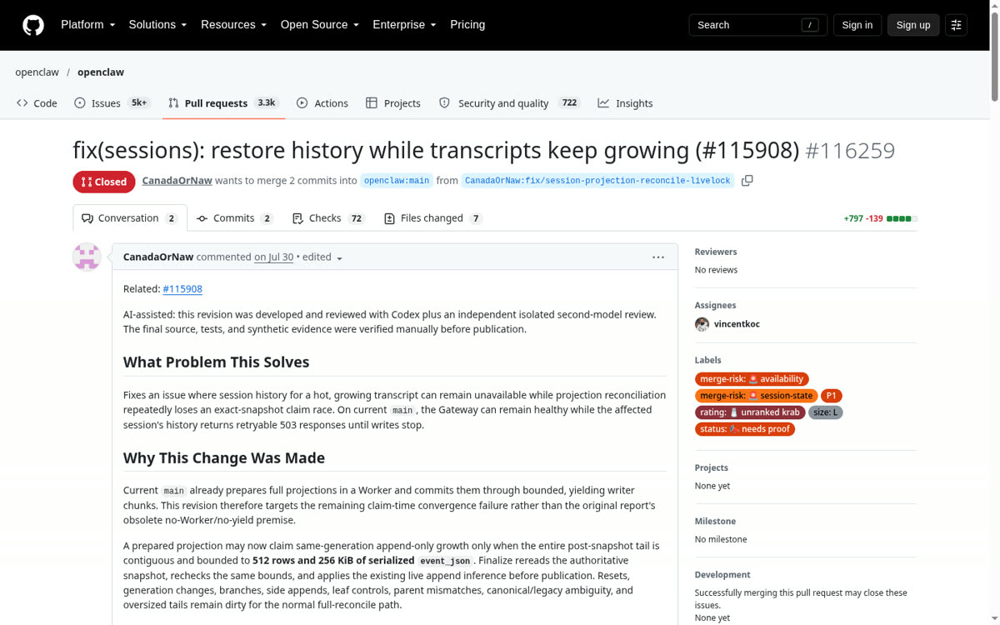
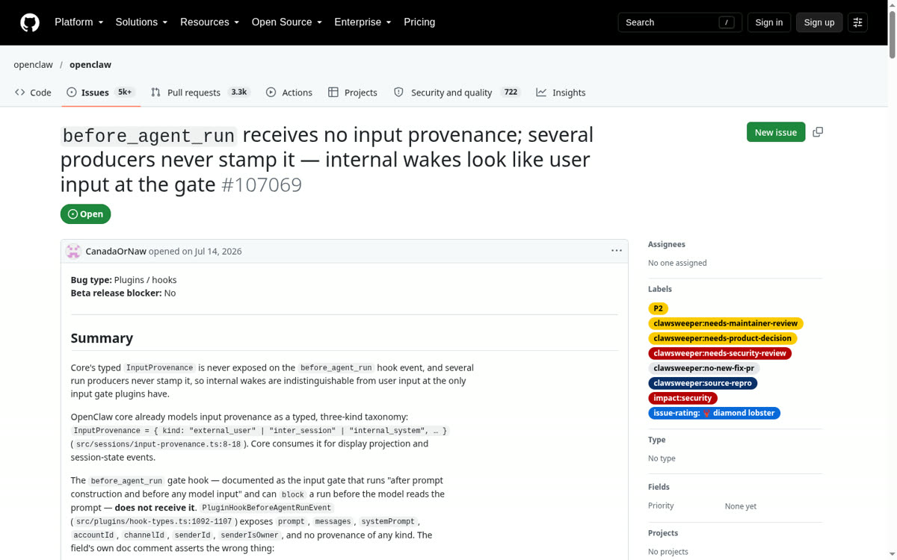

Under sustained session writes, the OpenClaw agent runtime would enter a session transcript reconciliation livelock, blocking the Node.js main thread and freezing all message channel transports simultaneously.
Engineered Fix & Security AuditsI isolated the exact source-level reproduction in Session transcript projection reconcile (Issue #115908, rated P1 and diamond lobster) and designed the fix architecture (PR #116259) that the merged upstream fix (#142018, Sept 2026) is built on as a credited contributor. I also isolated two upstream security/auth flaws awarded the project's top diamond lobster rating: Gateway device-identity pairing rejection (#115909) and unstamped internal wake provenance at before_agent_run (#107069).



